import numpy as np8 Python Libraries
For this tutorial, we are going to outline the most common uses for each of the following libraries:
Numpy is a library for working with arrays of data.
Scipy is a library of techniques for numerical and scientific computing.
Matplotlib is a library for making visualizations.
Seaborn is a higher-level interface to Matplotlib that can be used to simplify many visualization tasks.
Important: While this tutorial provides insight into the basics of these libraries, I recommend digging into the documentation that is available online.
8.1 NumPy
NumPy is the fundamental package for scientific computing with Python. It contains among other things:
- a powerful N-dimensional array object
- sophisticated (broadcasting) functions
- tools for integrating C/C++ and Fortran code
- useful linear algebra, Fourier transform, and random number capabilities
We will focus on the numpy array object.
8.1.1 Numpy Array
A numpy array is a grid of values, all of the same type, and is indexed by a tuple of nonnegative integers. The number of dimensions is the rank of the array; the shape of an array is a tuple of integers giving the size of the array along each dimension.
### Create a 3x1 numpy array
a = np.array([1,2,3])
print(a)
### Print object type
print(type(a))[1 2 3]
<class 'numpy.ndarray'>### Print shape
#we have a one dimensional object with 3 values
print(a.shape)(3,)### Print some values in a
print(a[0], a[1], a[2])1 2 3### Create a 2x2 numpy array using a nested list
b = np.array([[1,2],[3,4]])
print(b)[[1 2]
[3 4]]### Print shape
# we now have a two dimensional array (with 2 rows and 2 columns)
print(b.shape)(2, 2)#in row two, access the the first value
#here we index, specifying the row first and then the column position
#don't forget: in py we start counting at 0
print(b[1,0])3## Print several values in b
print(b[0,0], b[0,1], b[1,1])1 2 4### Create a 3x2 numpy array
c = np.array([[1,2],[3,4],[5,6]])
carray([[1, 2],
[3, 4],
[5, 6]])### Print shape
print(c.shape)(3, 2)
2 3 5 6### Print some values in c
print(c[0,1], c[1,0], c[2,0], c[2,1])2 3 5 68.1.1.1 Create numpy arrays with different automatic numberings
### create a 2x3 zero array with only 0s
d = np.zeros((2,3))
print(d)[[0. 0. 0.]
[0. 0. 0.]]### 4x2 array of ones
e = np.ones((4,2))
print(e)[[1. 1.]
[1. 1.]
[1. 1.]
[1. 1.]]### create 2x2 constant array with a specified value
#we first give the nr of rows and columns we want, followed by the constant value
f = np.full((2,2), 9)
print(f)[[9 9]
[9 9]]### create a 3x3 random array with random nrs
g = np.random.random((3,3))
print(g)[[0.75578673 0.52378499 0.68715926]
[0.09153656 0.89729222 0.85334664]
[0.34651959 0.06094491 0.15857276]]8.1.2 Array Indexing
### Create 3x4 array
h = np.array([[1,2,3,4,], [5,6,7,8], [9,10,11,12]])
print(h)[[ 1 2 3 4]
[ 5 6 7 8]
[ 9 10 11 12]]print(h[0,1])2### Slice array to make a 2x2 sub-array
#first we select rows with index 0 and 1 (so up to but not including 2)
#then we further select columns with index 1 and 2
i = h[:2, 1:3]
print(i)[[2 3]
[6 7]]### Modify something in the slice
i[0,0] = 1738
print(i)[[1738 3]
[ 6 7]]#notice how this value is also changed in our original array h!
print(h)[[ 1 1738 3 4]
[ 5 6 7 8]
[ 9 10 11 12]]8.1.3 Datatypes in Arrays
### Integer
j = np.array([1, 2])
print(j)
print(j.dtype) [1 2]
int64### Float
k = np.array([1.2, 2.0])
print(k)
print(k.dtype) [1.2 2. ]
float64### Force Data Type
l = np.array([1.0, 2.0], dtype = np.int64)
print(l)
print(l.dtype)[1 2]
int648.1.4 Array Math
Basic mathematical functions operate elementwise on arrays, and are available both as operator overloads and as functions in the numpy module:
x = np.array([[1,2],[3,4]], dtype = np.float64)
y = np.array([[5,6],[7,8]], dtype = np.float64)
print(x)[[1. 2.]
[3. 4.]]print(y)[[5. 6.]
[7. 8.]]# Elementwise sum; both produce the array
# [[ 6.0 8.0]
# [10.0 12.0]]
print(x + y)[[ 6. 8.]
[10. 12.]]print(np.add(x, y))[[ 6. 8.]
[10. 12.]]# Elementwise difference; both produce the array
# [[-4.0 -4.0]
# [-4.0 -4.0]]
print(x - y)[[-4. -4.]
[-4. -4.]]print(np.subtract(x, y))[[-4. -4.]
[-4. -4.]]# Elementwise product; both produce the array
# [[ 5.0 12.0]
# [21.0 32.0]]
print(x * y)[[ 5. 12.]
[21. 32.]]print(np.multiply(x, y))[[ 5. 12.]
[21. 32.]]# Elementwise division; both produce the array
# [[ 0.2 0.33333333]
# [ 0.42857143 0.5 ]]
print(x / y)[[0.2 0.33333333]
[0.42857143 0.5 ]]print(np.divide(x, y))[[0.2 0.33333333]
[0.42857143 0.5 ]]# Elementwise square root; produces the array
# [[ 1. 1.41421356]
# [ 1.73205081 2. ]]
print(np.sqrt(x))[[1. 1.41421356]
[1.73205081 2. ]]8.1.5 Descriptive statistics with numpy
x = np.array([[1,2],[3,4]])
x array([[1, 2],
[3, 4]])### Compute sum of all elements; prints "10"
print(np.sum(x))10### Compute sum of each column; prints "[4 6]"
print(np.sum(x, axis=0)) [4 6]### Compute sum of each row; prints "[3 7]"
print(np.sum(x, axis=1))[3 7]### Compute mean of all elements; prints "2.5"
print(np.mean(x))2.5### Compute mean of each column; prints "[2 3]"
print(np.mean(x, axis=0)) [2. 3.]### Compute mean of each row; prints "[1.5 3.5]"
print(np.mean(x, axis=1))[1.5 3.5]8.2 SciPy
Numpy provides a high-performance multidimensional array and basic tools to compute with and manipulate these arrays. SciPy builds on this, and provides a large number of functions that operate on numpy arrays and are useful for different types of scientific and engineering applications.
For this course, we will primariyl be using the SciPy.Stats sub-library.
8.2.1 SciPy.Stats
The SciPy.Stats module contains a large number of probability distributions as well as a growing library of statistical functions such as:
Continuous and Discrete Distributions (i.e Normal, Uniform, Binomial, etc.)
Descriptive Statistcs
Statistical Tests (i.e T-Test)
from scipy import stats
import numpy as np### Print 10 Normal Random Variables
print(stats.norm.rvs(size = 10))[ 1.2273344 -1.18292396 0.06328786 -1.08124849 -0.6143745 0.703326
1.11746254 1.06465073 0.64391558 -1.8944723 ]from pylab import *
# Create some test data
dx = .01
X = np.arange(-2,2,dx)
Y = exp(-X**2)
#print(X)
#print(Y)# Normalize the data to a proper PDF
Y /= (dx*Y).sum()
# Compute the CDF
CY = np.cumsum(Y*dx)
# Plot both
plot(X,Y)
plot(X,CY,'r--')
show()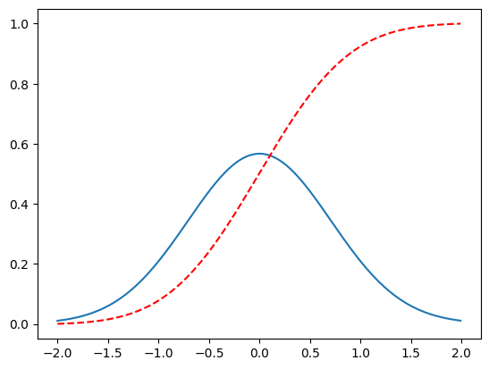
### Compute the Normal CDF of certain values.
#this returns some probabilites based on the plot above
print(stats.norm.cdf(np.array([1,-1., 0, 1, 3, 4, -2, 6])))[0.84134475 0.15865525 0.5 0.84134475 0.9986501 0.99996833
0.02275013 1. ]8.2.1.1 Descriptive Statistics
np.random.seed(282629734)
# Generate 1000 Student’s T continuous random variables.
x = stats.t.rvs(10, size=1000)# Do some descriptive statistics
print(x.min()) # equivalent to np.min(x)-3.7897557242248197print(x.max()) # equivalent to np.max(x)5.263277329807165print(x.mean()) # equivalent to np.mean(x)0.014061066398468422print(x.var()) # equivalent to np.var(x))1.288993862079285stats.describe(x)DescribeResult(nobs=1000, minmax=(-3.7897557242248197, 5.263277329807165), mean=0.014061066398468422, variance=1.2902841462255106, skewness=0.21652778283120955, kurtosis=1.055594041706331)Later in the course, we will discuss distributions and statistical tests such as a T-Test. SciPy has built in functions for these operations.
8.3 MatPlotLib
Matplotlib is a plotting library. In this section give a brief introduction to the matplotlib.pyplot module.
import numpy as np
import matplotlib.pyplot as plt# Compute the x and y coordinates for points on a sine curve
x = np.arange(0, 3 * np.pi, 0.1)
y = np.sin(x)
# Plot the points using matplotlib
plt.plot(x, y)
plt.show() # You must call plt.show() to make graphics appear.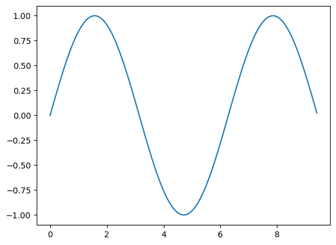
# Compute the x and y coordinates for points on sine and cosine curves
x = np.arange(0, 3 * np.pi, 0.1)
y_sin = np.sin(x)
y_cos = np.cos(x)
# Plot the points using matplotlib
plt.plot(x, y_sin)
plt.plot(x, y_cos)
plt.xlabel('x axis label')
plt.ylabel('y axis label')
plt.title('Sine and Cosine')
plt.legend(['Sine', 'Cosine'])
plt.show()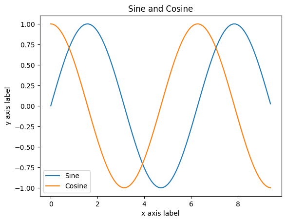
8.3.0.1 Subplots
import numpy as np
import matplotlib.pyplot as plt
# Compute the x and y coordinates for points on sine and cosine curves
x = np.arange(0, 3 * np.pi, 0.1)
y_sin = np.sin(x)
y_cos = np.cos(x)
# Set up a subplot grid that has height 2 and width 1,
# and set the first such subplot as active.
plt.subplot(2, 1, 1)
# Make the first plot
plt.plot(x, y_sin)
plt.title('Sine')
# Set the second subplot as active, and make the second plot.
plt.subplot(2, 1, 2)
plt.plot(x, y_cos)
plt.title('Cosine')
# Show the figure.
plt.show()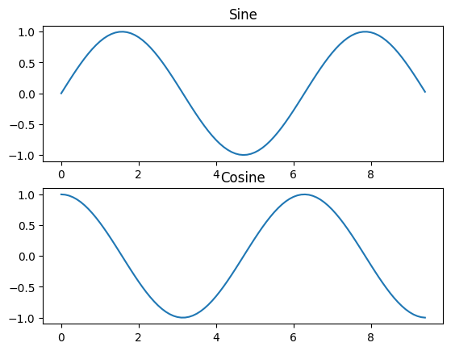
8.4 Seaborn
Seaborn is complimentary to Matplotlib and it specifically targets statistical data visualization. But it goes even further than that: Seaborn extends Matplotlib and makes generating visualizations convenient.
While Matplotlib is a robust solution for various problems, Seaborn utilizes more concise paramesters for ease-of-use.
8.4.0.1 Scatterplots
# Import necessary libraries
import seaborn as sns
import matplotlib.pyplot as plt
import pandas as pd# Store the url string that hosts our .csv file
url = "../data/Cartwheeldata.csv"
# Read the .csv file and store it as a pandas Data Frame
df = pd.read_csv(url)
# Create Scatterplot
sns.lmplot(x='Wingspan', y='CWDistance', data=df)
plt.show()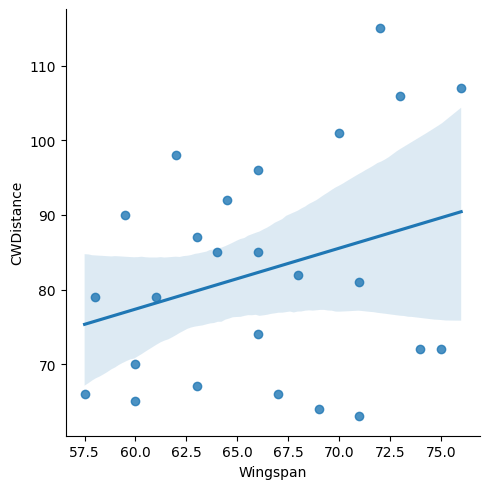
# Scatterplot arguments
sns.lmplot(x='Wingspan', y='CWDistance', data=df,
fit_reg=False, # No regression line
hue='Gender') # Color by evolution stage
plt.show()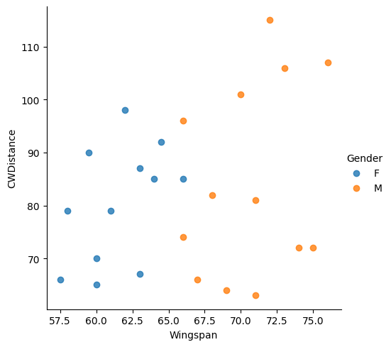
# Construct Cartwheel distance plot
sns.swarmplot(x="Gender", y="CWDistance", data=df)
plt.show()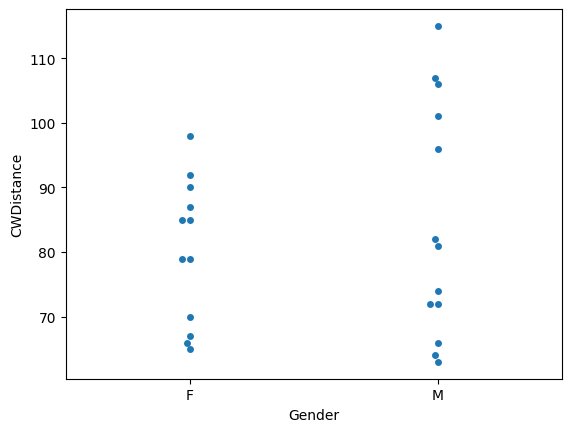
8.4.0.2 Boxplots
sns.boxplot(data=df.loc[:, ["Age", "Height", "Wingspan", "CWDistance", "Score"]])
plt.show()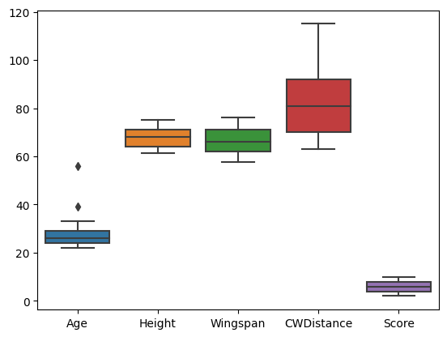
# Male Boxplot
sns.boxplot(data=df.loc[df['Gender'] == 'M', ["Age", "Height", "Wingspan", "CWDistance", "Score"]])
plt.show()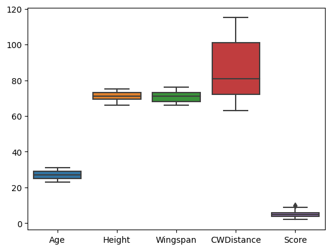
# Female Boxplot
sns.boxplot(data=df.loc[df['Gender'] == 'F', ["Age", "Height", "Wingspan", "CWDistance", "Score"]])
plt.show()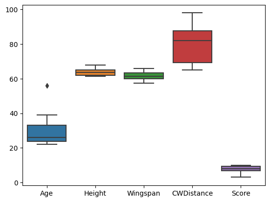
# Male Boxplot
sns.boxplot(data=df.loc[df['Gender'] == 'M', ["Score"]])
plt.show()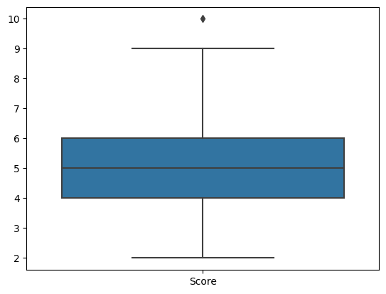
# Female Boxplot
sns.boxplot(data=df.loc[df['Gender'] == 'F', ["Score"]])
plt.show()8.4.0.3 Histogram
# Distribution Plot (a.k.a. Histogram)
sns.displot(df.CWDistance)
plt.show()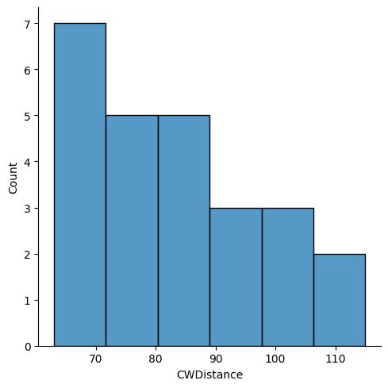
8.4.0.4 Count Plot
# Count Plot (a.k.a. Bar Plot)
sns.countplot(x='Gender', data=df)
plt.xticks(rotation=-45)
plt.show()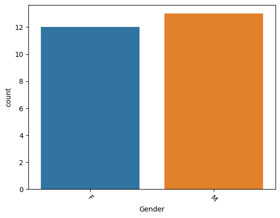